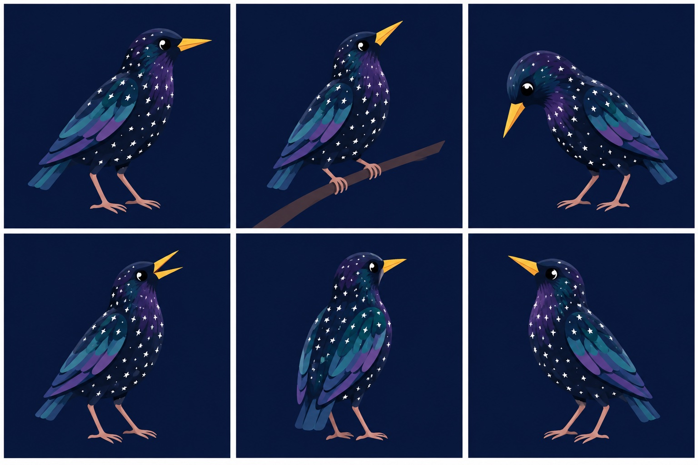
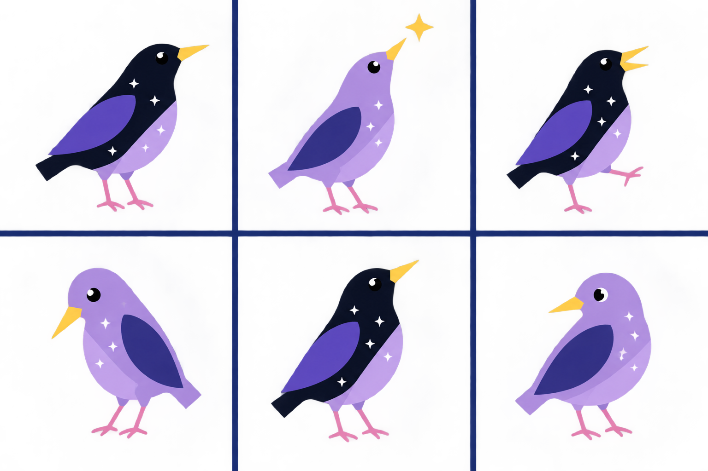
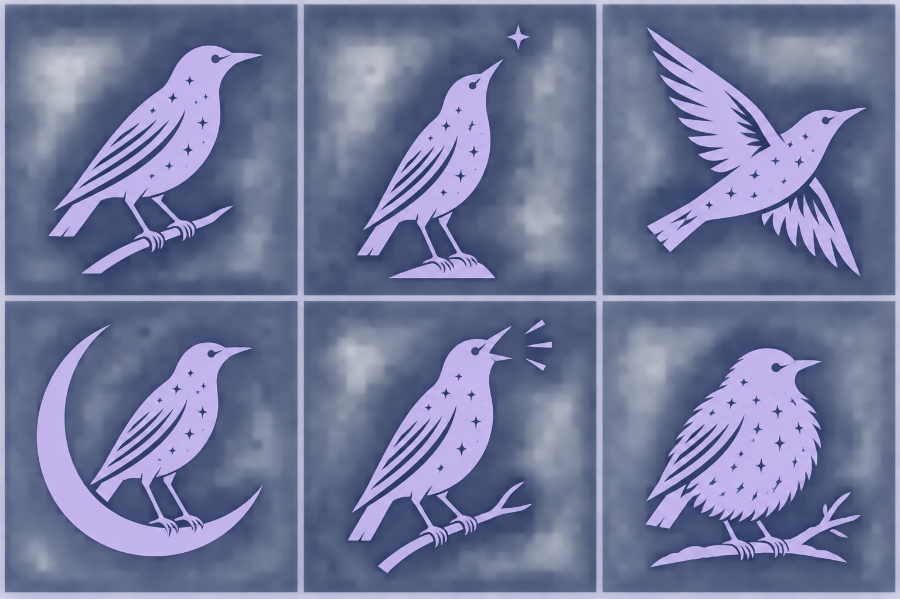
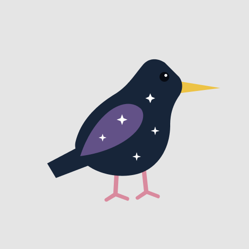
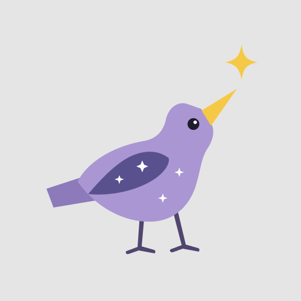

Starling logo concepts from Figma AI
Idea pictures to react to, not finished logos. The final logo will still be drawn by hand as clean SVG, using whatever you point to here: a pose, a color mix, a beak, legs, a level of detail.
1. Illustrated starlings
The most "real starling" of the set: iridescent violet and teal, star-shaped speckles, pink legs with proper feet. Too detailed for a logo as is, but good for which features make it a starling.

2. Dark and lavender mixed
Your idea of both colors in one bird: a dark starling back and head over a lavender belly, with white star speckles. The image came out with a messy see-through background, so look at the birds, not the smudges around them.

3. One-color emblems
Single lavender silhouettes with the wing cut in as lines, like a stamp. Includes a look-up pose, flight, a crescent Moon perch, singing, and a fluffed winter bird.

4. Figma vector marks
These two came out as editable vector shapes in Figma, so they're closest to a usable logo, though the shapes are plain.

